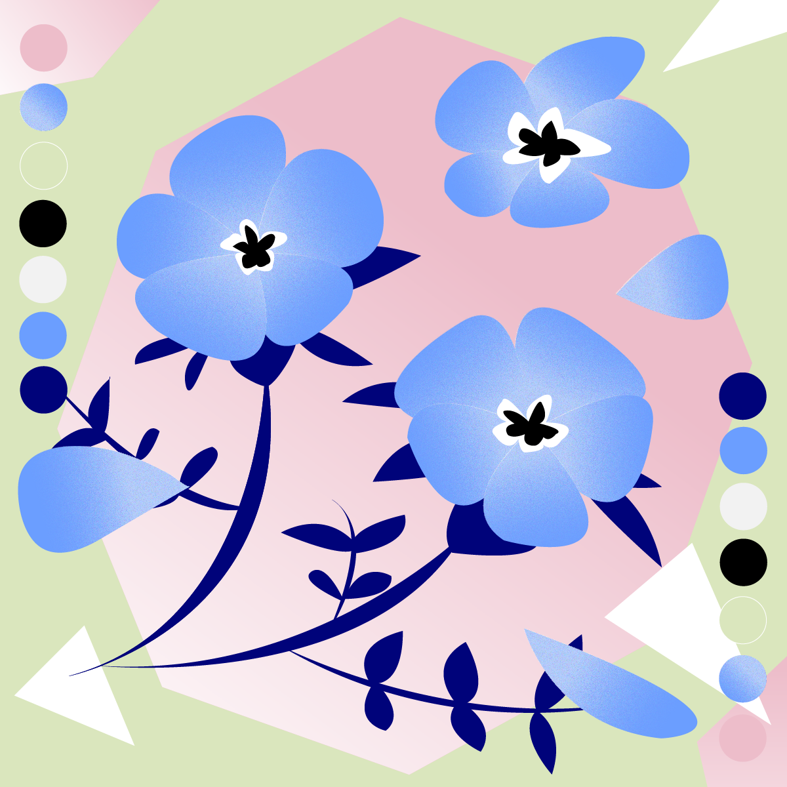
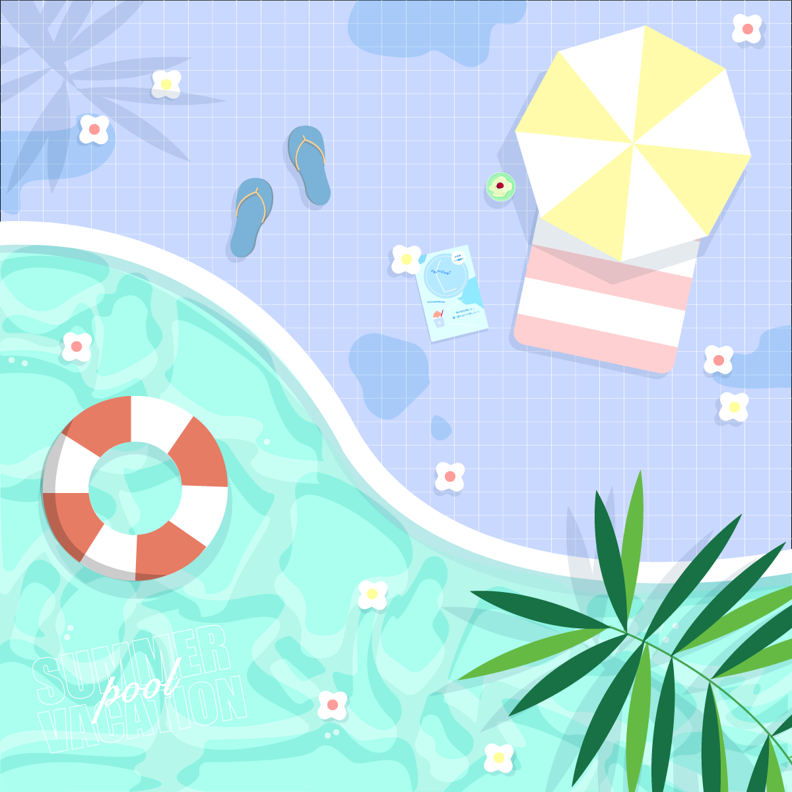

Visual Archive
These are two-dimensional compositions I created in Illustrator. Since I made a conscious effort to vary the atmosphere of each piece, I think the designs cover a fairly wide range.


Thank you for taking the time to look through my portfolio. I may update it as I create new work, so please come back often.